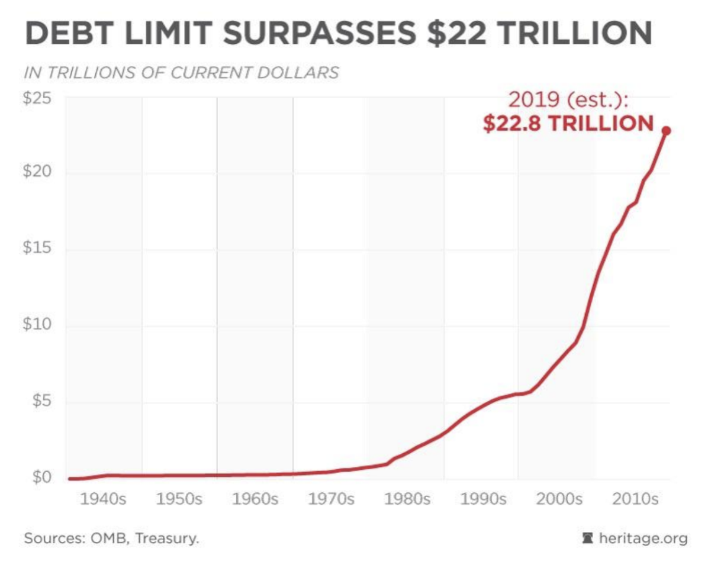
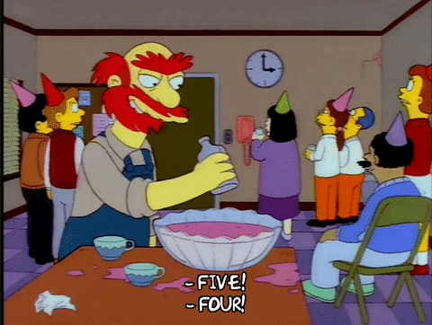
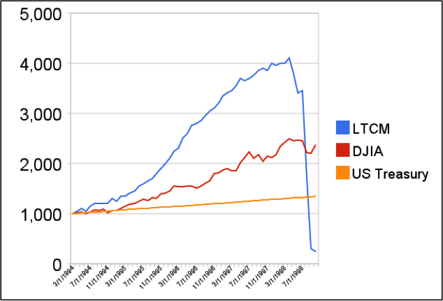
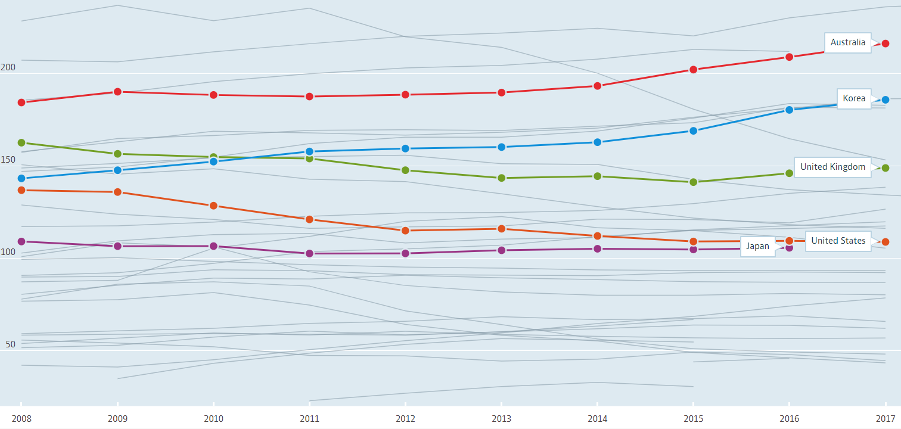

"The Fed Is Spiking the Punch Bowl" 이 무슨 뜻일까 ?
게시: 2019-07-15T06:30:49+09:00
최근 야후 파이낸스에 눈길을 끄는 기사 하나가 떴습니다. 한줄 요약할 필요도 없이, 제목이 곧 한줄 요약이더라고요. Why low interest rates could cause a ‘colossal reckoning’ "저금리가 거대한 파국을 야기할 수 있다" (reckoning은 계산, 정산의 뜻도 있지만 심판이라는 뜻도 있는데, 여기서는 대가를 치르게 된다는 뜻입니다.) https://finance.yahoo.com/news/why-low-interest-rates-could-cause-a-colossal-reckoning-151351867.html 핵심 내용을 요약하면 이렇습니다. . 지난 10년 동안의 엄청난 규모의 부채가 가계와 기업 양쪽에 쌓이게 되었는데, 이건 연방준비위원회가 너무 장기간 저금리 기조를 유지하는 바람에 '빚을 내는 것이 이익'인 상황을 만들었기 때문이다. . 그에 대해 크게 대가를 치르게 되는 날이 머지 않았다. . 10년 전 금융위기 때 기업 부채 규모는 5조 달러 정도였다. 오늘날 그 규모는 10조 달러에 가까와졌는데, 그 중 상당수가 정크 본드 수준의 위험등급 부채이다. . 현재 BBB 등급의 회사채가 1조 달러 이상 쌓여있다. 경제에 약간의 문제만 생겨도 그 많은 BBB 회사채는 정크 본드로 전락한다. 원금 손실이 클 것이다.

(아... 이 표를 보니 약간 겁이 나는군요.)
비슷한 기사는 이 뿐만 아닙니다. 아래 기사도 연준이 저금리를 전가의 보도처럼 조심성 없이 써대는 것에 대한 우려를 나타내고 있습니다.
The Fed Is Spiking the Punch Bowl. It May Not End Pretty. 연방준비위원회가 파티 음료에 술을 더 넣고 있다. 이런 식이면 끝판이 안 좋을 수 있다.

(Punch bowl은 파티에 흔히 있는 저런 대형 음료 그릇인데, 보통은 과일 쥬스에 술을 넣은 펀치주를 넣어 둡니다. Spike라는 단어는 못으로 고정하다는 뜻 외에도 음식이나 음료에 술 또는 독 같은 것을 타는 행위를 뜻하기도 합니다. Spike the punch bowl이라는 표현은 파티의 흥을 돋우려고 펀치주에 보드카 같은 독한 술을 더 넣는 행위를 뜻합니다.)
이 기사에서 펀치주 그릇 이야기가 나오는 것은 1951년~1970년 기간 중 연준의장이었던 윌리엄 마틴(William McChesney Martin)의 언급 때문입니다. 그는 중앙은행의 역할은 '파티가 한창일 때 펀치주 그릇을 치우는 것'이라고 말했습니다. 즉 파티가 잘 끝나려면 술 공급을 도중에 끊어야 한다는 비유인데, 이 기사는 펀치 그릇을 치워야 하는 상황에서 연준이 오히려 펀치 그릇에 술을 더 넣고 있다고 비난하고 있는 것입니다. 이 기사는 저금리가 당장 경기를 살리는 것에 효과가 좋기는 해도, 부적절한 저금리 정책은 항상 문제를 일으켰다고 주장하고 있습니다. 가령 1920년대 중앙은행의 실질적인 보스였던 뉴욕 연준 의장 벤자민 스트롱(Benjamin Strong)은 1927년 금본위 고수 때문에 약세이던 영국 파운드화를 지원한답시고 "증시에 위스키를 좀 넣어주겠다" (coup de whiskey for the stock exchange)라고 했습니다. 결국 그렇게 시작된 강세장은 1929년 대공황으로 이어졌습니다. 1998년 앨런 그린스펀(Alan Greenspan)은 러시아 국채 위기와 유명한 헷지펀드인 롱텀캐피털(Long-Term Capital Management) 파산의 위기를 극복하고자 금리를 인하했는데, 그건 결국 닷컴 버블로 이어졌고 그 버블은 2000년에 터지고 말았습니다.

(유명한 롱텀캐피탈의 수익곡선입니다. 물론 LTCM은 Long Term Capital Management의 약자입니다.)
이 기사는 현재 미국 경기가 상반기 2.3% 성장으로 건실하고 실업률은 50년 이래 최저치인 3.7%인 현황에서, 단지 인플레가 목표치보다 낮다는 이유 하나만으로 저금리 정책을 쓰는 것이 맞느냐라고 의문을 던지고 있습니다. 그나마 근원 소비자 물가지수(core consumer-price index, 식품과 에너지 비용을 제외한 물가지수)는 연간 2.1%로 오르고 있는 상황입니다.
이 기사는 '그러니 마치 지금이 1990년대인 것처럼 파티를 즐기라'고 권하고 있습니다. 다만 '1990년대의 끝이 어땠는지는 잊지말라'고 의미심장하게 덧붙이고 있습니다.
물론 이런 식의 '심판의 날이 머지 않았다'라는 예언은 언제나 있기 마련이었으니 그렇게 신경 안 써도 되는 일일 수 있습니다. 하지만 본질적으로 빚이란 그다지 좋은 것은 아니지요. 특히 어떤 물건이든 투기가 일어나는데 그 투기 자금이 대부분 빚을 내어 조달되는 것이라면 문제가 더욱 심각해집니다. 그게 바로 전형적인 거품 현상이기 때문에 그렇습니다. 문제는 이게 거품인지 적정 가격인지 사실상 아무도 모른다는 것이지요. 특히 전세계적으로 저금리 상황인 경우는 더욱 그렇습니다. 우리나라는 (특히 일본에 비하면) 국가부채가 꽤 건실한 수준인 나라로 알려져 있습니다만, 우리나라의 문제는 가계부채라고 하지요. 작년 초 뉴스이긴 합니다만 아래와 같은 뉴스가 있었지요. https://www.yna.co.kr/view/AKR20180219156800072 "WSJ은 국제결제은행(BIS)과 옥스퍼드 이코노믹스의 자료를 인용, 모두 10개국을 가계부채 위험 국가로 분류했다. 우리나라를 포함해 노르웨이, 스웨덴, 스위스, 호주, 캐나다, 뉴질랜드, 홍콩, 태국, 핀란드 등이다." 또 올해 초 뉴스에도 이 상황은 개선되지 않은 것으로 보도되엇습니다. https://www.yna.co.kr/view/GYH20190407000300044 "19년 4월 7일 국제금융협회(IIF)가 발표한 '글로벌 부채 모니터' 보고서를 보면 작년 4분기 말 기준 한국 가계부채의 GDP 대비 비율은 97.9%로, IIF가 국가별 수치를 제시한 34개 선진·신흥국 가운데 가장 높았다." OECD 국가들 중에서 보면 우리나라 가계의 가처분소득 대비 부채(Household debt Total, % of net disposable income, 2008 – 2018)가 과거부터 꽤 높았는데, 2015년 이후에 특히 상승하고 있는 것을 보실 수 있습니다.

(표 원본 : https://www.oecd-ilibrary.org/economics/household-debt/indicator/english_f03b6469-en )
이 별로 영광스럽지 못한 표를 보면 우리나라 저 위쪽에 있는 나라들은 노르웨이나 덴마크 등 북구의 잘사는 복지국가들이 많습니다. 물론 우리나라를 그런 복지국가들과 직접 비교를 하는 건 부적절해보입니다. 특이하게도 호주도 우리나라와 비슷한 트렌드를 보이고 있는데, 아니나다를까 한국과 함께 호주가 가계부채 위험성이 크다는 기사가 최근에 나왔습니다. http://biz.heraldcorp.com/view.php?ud=20190712000588 "13일 국제금융센터에 따르면 최근 글로벌 경제·금융 분석기관 ‘컨티뉴엄 이코노믹스’(Continuum Economics)는 한국을 비롯한 아시아 지역은 가계부채가 이미 높은 수준이며, 금리인하 사이클 돌입에 따른 금융불균형 리스크 확대에 유의할 필요가 있다는 내용의 보고서를 냈다. CE는 미국과 일부 유럽 국가와 달리 아시아 지역의 국내총생산(GDP) 대비 가계신용 비율이 지난 10년 간 꾸준히 상승했다는 점을 문제로 들었다. 가계부채 증가의 원인으로는 부동산시장 호황, 저금리 기조, 일부 포퓰리즘적 정부 정책 등을 지목했다. 특히 한국과 호주의 가계부채 리스크가 크다고 CE는 평가했다. 금리인하 사이클 돌입은 단기 디폴트 위험을 줄이는 요인이지만, 장기적으론 지속 가능성 이슈를 촉발한다는 지적이다." 왜 우리나라 가계부채가 심각한 수준인가를 생각해보면 위의 신문 보도에서 지적된 바와 같이, 실거주이든 투자이든 부동산 매입 또는 전세를 위한 대출이 큰 부분을 차지한 것 같습니다. 호주도 중국 자본 유입 등 여러가지 이유로 해서 부동산 가격이 대폭 상승한 나라지요. 아래 e-나라지표 자료 해설에서도 주택담보대출을 지목하고 있네요. http://www.index.go.kr/potal/main/EachDtlPageDetail.do?idx_cd=1076 "최근 가계부채의 빠른 증가세는 기본적으로 주택시장 정상화, 금리 인하에 따른 대출수요 확대 등 복합적 요인에 기인 ° 특히 활발한 주택거래 및 아파트 신규분양, 저금리 등으로 주택담보대출이 크게 증가하고, 인터넷 전문은행 출범 등으로 인한 기타대출의 증가도 가계대출 확대의 주요 요인임" 이하는 뉴스 인용이 아닌 그냥 제 생각입니다. 이런 상황에서 최근에 미국 연방준비위원회 의장인 제롬 파월이 7월 중 금리인하를 강력하게 시사하면서 다우존스 지수 등 국내외 주식 시장이 크게 뛰었습니다. 우리나라도 금리를 인하하지 않을까 하는 기대도 올라가고 있습니다. 금리가 내려가면 가계와 기업의 이자 부담이 적어지고 시중에 돈이 풀려 주식시장이 활황을 띠게 되므로 일반적으로 좋은 뉴스입니다. 그러나 항상 좋은 뉴스만은 아닙니다. 금리가 내려가는 것은 돈의 가치가 떨어진다는 소리이므로, 현금과 예금을 손에 쥐고 있는 유복하신 분들은 당연히 손에 준 돈으로 뭔가 실물을 사려고 하게 됩니다. 우리나라는 부동산 불패의 전설이 살아있는 나라이고, 그 중에서도 서울 아파트가 항상 진리인 사회이므로 결국 다시 아파트를 중심으로 주택 가격이 오르게 되지 않을까 우려가 됩니다. 저는 1주택자라서 시장 중립적인 입장입니다. 하지만 저는 아파트를 2채 3채 가지고 계신 분들을 부동산 투기꾼이라고 비난할 생각은 전혀 없습니다. 자본주의 사회에서 법으로 금지되지 않은 것은 당연히 하셔도 됩니다. 지난 10년간 그랬던 것처럼 전세계적인 저금리 상황에서는 은행에서 돈을 빌려 부동산이나 주식을 사는 것이 현명한 투자이지 비난받을 일은 아닙니다. 다만, 주식시장과는 달리 부동산, 특히 주택시장은 좋든싫든 온 국민의 일상과 생존에 직접적인 영향을 줍니다. 주식이야 안 하시는 분도 많고, 주식시장에서 누군가 떼돈을 벌든 전재산을 날리든 그거야 그 분들 개인의 판단에 따른 개인의 사정일 뿐입니다. 그러나 3차원 공간에 사는 인간이란 존재는 반드시 어딘가에 몸을 눕혀야 하고, 그러자면 돈을 내고 집을 사든가 하다못해 월세라도 누군가에게 상납해야 합니다. 따라서 주택이란 기본적인 공기나 물처럼 모든 사람이 누려야 하는 일종의 공공재같은 것이라고도 볼 수 있습니다. 그러나 현실은 전혀 그렇지가 않고, 오히려 누구나 필요로 한다는 점에서 더더욱 주택시장은 확실하고 수지맞는 투자의 대상이 되었습니다. 돈이 몰리니 당연히 가격은 뛰었고, 그 결과로 피해를 입는 것은 서민들입니다. 그래서 부동산 투기를 해서 돈을 버신 분들은 부러움과 함께 비난도 받곤 하시는 것입니다. 하지만 다시 한번 강조하지만, 현재와 같은 규칙이 정해진 시장에서 규칙을 제대로 지키며 돈을 버는 행위는 결코 비난받을 일이 아닙니다. 그 규칙대로 플레이를 했는데 서민들이 피해를 입는다면 그건 규칙을 만든 운영진이 잘못한 것이지 플레이어들이 잘못한 것이 아닙니다. 그렇다고 기준 금리를 올리면 주택시장이야 어느 정도 안정될지 몰라도, 기업과 가계의 이자 부담이 커져서 경제가 망가집니다. 그렇게 되면 집값이 떨어져도 서민들의 소득이 더 큰 폭으로 떨어질 것이므로 오히려 상황이 악화될 수도 있겠지요. 그래서 기준 금리는 건드리지 않고 각종 세금과 규제 등을 통해서 집값을 잡으려고 정부는 노력합니다만, 복잡오묘하기 없는 자본주의 시장에서 그런 인위적이고 투박한 노력이 항상 좋은 결과만을 내는 것은 아니라서 어찌 될지 예상은 못 하겠습니다. 그래도 저는 정부가 그런 위험 관리 노력을 하는 것이 옳다고 생각합니다.
무엇보다, 기술 개발과 사업에 돈을 투자하는 것보다 그냥 땅과 아파트를 사두고 묵혀두는 것이 훨씬 더 돈이 되는 사회에는 아무런 희망이 없습니다. 흔히 우파에서는 '지나친 복지가 국민들의 근로의욕을 저하시킨다'라고 하는데, 그것보다 훨씬 더 해로운 것이 '부동산 사놓으면 돈이 된다'라는 믿음이라고 저는 생각합니다. 대부분의 부동산 부자들은 장기적으로 우리 사회가 어떻게 되든 당장 자신의 이익을 더 크게 만들어줄 보수우파 정당을 열심히 지지하는 것이 당연합니다. 여러번 반복해서 말씀드리지만, 현대 민주주의에서 선거제도란 결코 선과 악의 대결이 아니라 자신의 이익을 대변해줄 사람에게 표를 던지는 제도입니다.
만약 최저임금 받으며 일하는 분들이나 하위 70%에게 주어지는 기초노령연금 받으시는 노인분들이 재벌들과 부동산 부자들의 이익을 위하는 정당에 표를 던지신다면 상당히 이상한 일이겠지요. 그런데 미국이든 우리나라든 그런 현상, 즉 저소득 저학력 계층이 보수정당을 지지하는 일은 흔한 일입니다.
이견이 많겠습니다만, 저는 그런 이유 중 주된 것은 정치권이 (이건 사실 정도의 차이는 있지만 진보 쪽도 자유롭지 못한 일이긴 한데) 증오의 정치를 하기 때문이라고 생각합니다. 이익 계산은 골치 아프고 복잡하지만 증오는 매우 이해하기도 쉽고 단순하거든요. 미국 같은 경우는 멕시칸, 흑인 등 소수인종과 외국에서 유입되는 저임금 노동자들에 대한 증오와 혐오를 부추깁니다. 유럽도 해외 난민과 외국인들에 대한 반감을 기초로 극우정당이 급부상하고 있지요. 우리나라 보수정당이라고 자처하는 정당은 80년대식 빨갱이 타령을 주로 이용합니다.
제가 주장하는 바는 딱 하나입니다. 각자 자신의 이익을 위해 투표하시기 바랍니다. 저는 부동산 가격을 안정화시키고 복지확대 정책을 펼치는 정당이 저와 제 가족의 이익에 부합하는 정당이라고 생각합니다. 어느 정당이 그런 정당인가라는 것에서는 또 갑론을박이 있겠습니다만, 부동산 부자들이 어느 정당을 지지하는지 보시는 것이 가장 확실한 방법이라고 생각합니다.
PS. 혹시 저도 그래도 서울에 아파트 한 채 들고 있는 사람인데 왜 부동산 가격이 떨어지기를 바라냐고 물으신다면, 간단합니다. 제게는 아이가 있고, 아파트 한 채를 더 사서 아이에게 물려줄 정도로 부자가 아니기 때문입니다. 저까지는 부동산 가격 폭등으로 어찌어찌 이익을 본다고 하더라도, 제 아이가 나중에 희망이 없을 정도로 높아진 부동산 가격으로 인해 평생 고생한다면 그건 제 이익에 반하는 일입니다. 아이들에게 아파트 한 채씩 사주실 정도로 부유하신 분들은 부자들을 위한 정당을 지지하시는 것이 합당합니다.